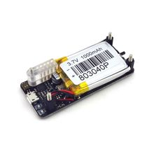

Модуль питания Raspberry Pi Zero UPS
Это модуль бесперебойного питания (UPS) для Raspberry Pi Zero: он позволяет кратковременно питать плату от аккумулятора при пропадании внешнего питания и обычно даёт время на корректное завершение работы.

Документация
Характеристики
Подробнее
Такие модули ставятся на Raspberry Pi Zero/Zero W/Zero 2 W и решают задачу резервного питания для портативных и автономных проектов. Обычно они содержат зарядку аккумулятора, повышающий преобразователь до 5 В, контроль напряжения батареи и сигнализацию о низком заряде или необходимости корректного выключения. Для Raspberry Pi Zero важно стабильное питание 5 В; для всей линейки Zero официально рекомендуется источник 5 V / 2.5 A. Конкретная реализация UPS у разных производителей отличается, поэтому без точной маркировки модуля нельзя честно назвать дополнительные функции как обязательные.